Next: A McErlang Application Up: Ltl2Buchi: Translation LTL Properties Previous: Writing LTL Properties Contents
The resulting module is used as an argument in the @monitor@ field in the @mce_opts@ record.
The generated büchi monitor is parametric on the variables that occur in the LTL formula (as propositional predicates). These parameters are instantiated using the argument in the specification of the @monitor@ field, in the @mce_opts@ record. Concretely, if an LTL formula 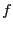 contains no variables then the corresponding module 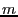 (containing the Büchi automaton that is the result of translating ) should be specified as: 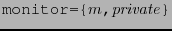 where 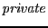 is the initial ``private'' state of the proposition predicates (see below for explanation).
In case the generated monitor contains variables the @monitor=@ specification accepts as argument a tuple containing two elements: the first is private data that predicate functions may initialise and use as they see fit, and the second is a list containing binary tuples with a predicate variable as the first element and the function implementing the predicate as the second element.
The specification of the @ltl_test@ monitor above serves
as a concrete example:
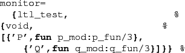
We remap the @P@ variable to a call to
the function @p_mod:p_fun/3@ (and vice versa for
the @Q@ variable). The order in which the variable
mappings are specified does not matter.
A function predicate is called by McErlang using three arguments:
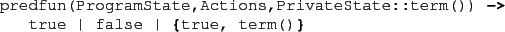
where @ProgramState@ is the current program state,
@Actions@ are the actions from the previous state,
and @PrivateState@ is the current private state.
A function predicate may return either @true@, signalling
that the predicate holds in the program state,
@false@ signalling that it doesn't, and
@true, NewPrivateState@ signalling that the predicate
holds, and replacing the old private state with the second element
of the returned tuple.
Note that the use of a private state
for passing information between formula predicates is a rather
fragile mechanism, but if used wisely it adds expressive power.
Consider the following example of the specification
of a resource usage scheme. We want to verify that a request
for the use of a resource is always eventually followed by a release
of the said resource. In LTL we can specify the property
as follows, using the @ltl@ module combinator functions:
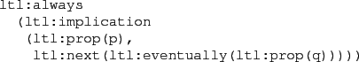
or more symbolically,
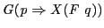.
The two predicate functions corresponding to 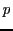 and are coded as @does_request@ and @does_release@ below. They assume that the code of the client has been annotated with two probe actions: a release action with the atom @release@ as label and a request action with the atom @request@ as label.
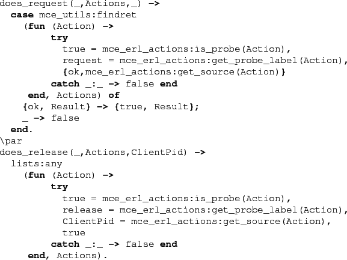
The first function searches for probe actions labelled with @request@, and if one is found, returns the process identifier of the client process issuing the probe action as private date. The second function searches for probe actions labelled with @release@ and which moreover was issued by the same client process as the @request@ (checked via the @ClientPid@ parameter).
Supposing that the translated property is stored in
the file @always_eventually@, the above
predicate functions are located in the module predfuns,
and the program
is started using the function @resourcemanager:start()@
then we can invoke a model checking run as follows:
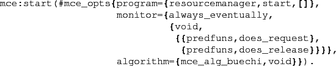